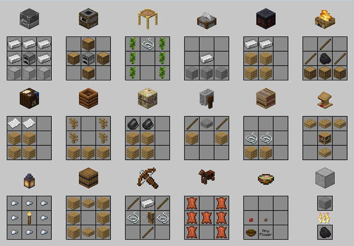

Crafting allows players to create new tools and blocks using items from their inventory. Subsequent versions often contain crafting recipes for new blocks and items. A player can use the 2×2 grid in the inventory or the 3×3 grid provided by a crafting table to craft. Smelting requires a furnace in addition to fuel and processes blocks into a more useful form such as from raw iron into iron ingots, which can then be crafted into iron tools and iron armor. >
